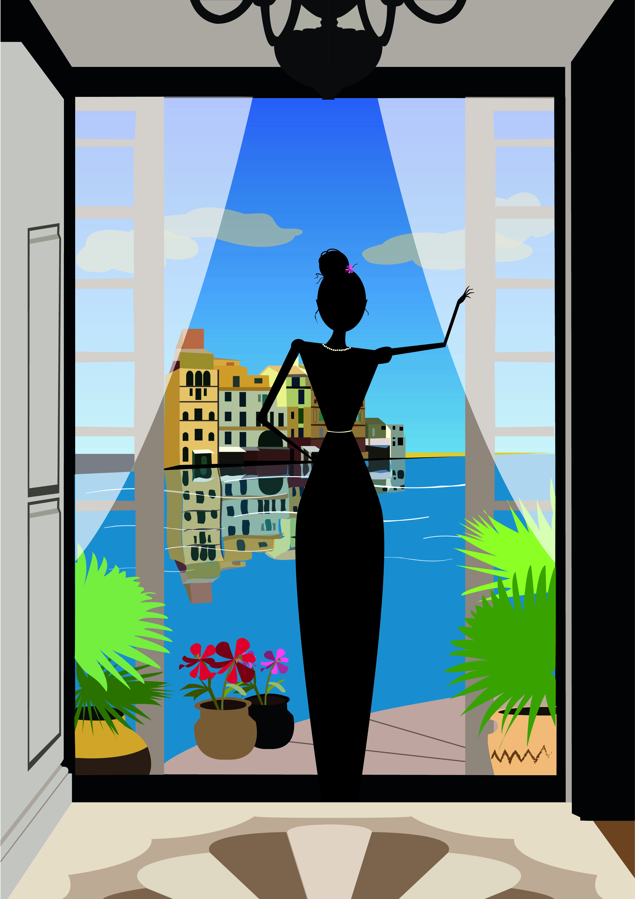
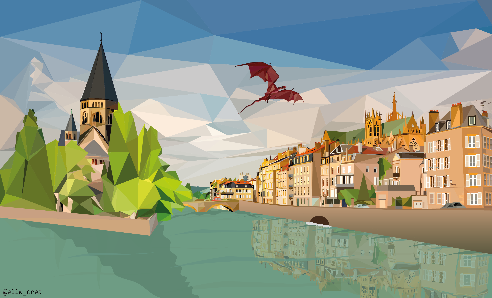

Paysage Illustrator



C'est avec cette modélisation que je fais mes premiers pas sur le logiciel Blender en première année de DUT MMI. Grâce à ce travail, je découvre la modélisation et l'animation 3D.